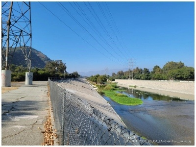
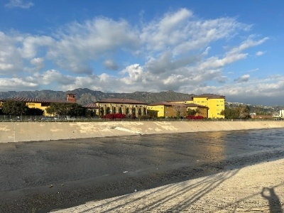
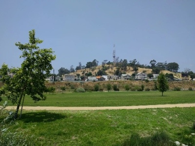

Explore a trail of Los Angeles County's that highlight the continous development within the city
The LA River Heritage Ride is a scenic bike route along the Los Angeles River, connecting the natural Glendale Narrows to the revitalized Los Angeles State Historic Park.
Location: Glendale, U.S.
Distance: ~10 miles
Time: ~1 Hours
Difficulty: Easy
More Info: Kamoot
A rare natural-bottom stretch of the LA River, preserved due to a high water table, offering a glimpse of the river before its post-1938 flood concrete channelization.
Developed along the former industrial corridors, the path reflects late 20th-century efforts to reconnect communities to the river through recreation and urban renewal.
Once the Southern Pacific Railroad's River Station yard (late 1800s-1990s), now redeveloped into a park representing LA's shift from rail industry to public green space


